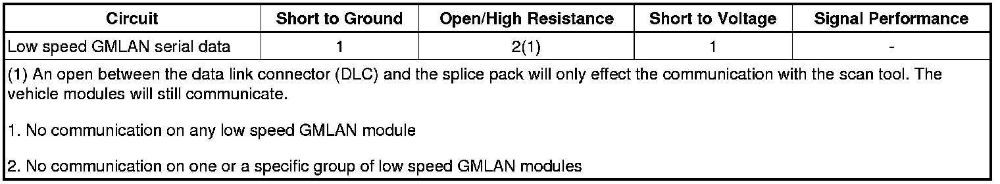

Scan Tool Does Not Communicate with Low Speed GMLAN Device
Scan Tool Does Not Communicate with Low Speed GMLAN Device
Diagnostic Instructions
* Perform the Diagnostic System Check - Vehicle (Initial Inspection and Diagnostic Overview) prior to using this diagnostic procedure.
* Review Strategy Based Diagnosis (Initial Inspection and Diagnostic Overview) for an overview of the diagnostic approach.
* Diagnostic Procedure Instructions (Initial Inspection and Diagnostic Overview) provides an overview of each diagnostic category.
Diagnostic Fault Information

Circuit/System Description
Modules connected to the low speed GMLAN serial data circuit monitor for serial data communications during normal vehicle operation. Operating information and commands are exchanged among the modules when the ignition switch is in any position other than OFF. The low speed GMLAN serial data circuit must be operational for the vehicle to start so the vehicle theft deterrent (VTD) module and body control module (BCM) can communicate. The low speed GMLAN serial data circuit uses SP 205 as the low speed splice pack or star connector.
Diagnostic Aids
* Use the Data Link References (Data Link References) to identify the low speed GMLAN serial data modules.
* This test is used for a total low speed GMLAN communication failure. If only 1 module is not communicating and sets no DTC, ensure that the vehicle is equipped with the module, then use DTC U0100-U0299 (U0100) for diagnostics.
* An open in the low speed GMLAN serial data circuit between the splice pack and a module(s) will only effect the specific module(s). This type of failure will set a loss of communication DTC for each module effected, and the other modules will still communicate. Depending on which module is effected, the vehicle may not start.
* An open between the data link connector (DLC) and the splice pack will only effect the communication with the scan tool. The vehicle modules will still communicate, and the vehicle will start.
* Use the DMM MIN/MAX function to capture/locate intermittent conditions.
* The engine will not start when there is a total malfunction of the low speed GMLAN serial data circuit.
The following conditions may cause a total loss of low speed GMLAN data communication:
- The low speed GMLAN serial data circuit shorted to ground or voltage.
- A module internal malfunction that causes a short to voltage or ground on the low speed GMLAN circuit.
Reference Information
Schematic Reference
Data Communication Schematics (Electrical Diagrams)
Connector End View Reference
Component Connector End Views (Connector Views)
Description and Operation
Data Link Communications Description and Operation (Description and Operation)
Electrical Information Reference
* Circuit Testing (Component Tests and General Diagnostics)
* Connector Repairs (Component Tests and General Diagnostics)
* Testing for Intermittent Conditions and Poor Connections (Component Tests and General Diagnostics)
* Wiring Repairs (Component Tests and General Diagnostics)
Scan Tool Reference
Control Module References (Programming and Relearning)for scan tool information.
Circuit/System Testing
1. Ignition OFF, disconnect the harness connector at the low speed splice pack.
2. Ignition ON, test for less than 1.0 volt between the low speed GMLAN serial data circuit of the DLC and ground.
• If greater than 1.0 volt, repair the serial data circuit for a short to voltage.
3. Test for infinite resistance between the serial data circuit of the DLC and ground.
• If less than infinite resistance, repair the serial data circuit for a short to ground.
4. Test for less than 1.0 ohm of resistance in the serial data circuit between the DLC and the splice pack.
• If greater than 1.0 ohm, repair the serial data circuit for an open/high resistance.
5. Install a 3-amp fused jumper wire between pin A and pin M of the splice pack. Install another 3-amp fused jumper wire to pin M.
6. Using the extra jumper wire from pin M attempt to establish communications with any other module connected to the splice pack. At least one module should be able to communicate.
• If communications can't be established with any module, test the serial data circuit of the BCM for a short to voltage, short to ground or open/high resistance. If the circuit tests normal, replace the BCM.
7. Using the extra jumper wire at pin M, continue testing each serial data circuit at the splice pack for communications. All modules should be able to communicate.
• If there is only one module connected, test the serial data circuit for a short to voltage or a short to ground. If the circuit tests normal, replace the faulty module.
• If there are multiple modules, test each serial data circuit for a short to voltage or a short to ground, with the modules disconnected. If the circuit tests normal, install each module one at a time starting with the closest module to the splice pack until communications stop. Replace the faulty module.
8. If all circuits test normal, test or replace the splice pack.
Repair Instructions
Perform the Diagnostic Repair Verification (Verification Tests) after completing the repair.
* Control Module References (Programming and Relearning)for module replacement, setup, and programming
* GMLAN Wiring Repairs (Component Tests and General Diagnostics)